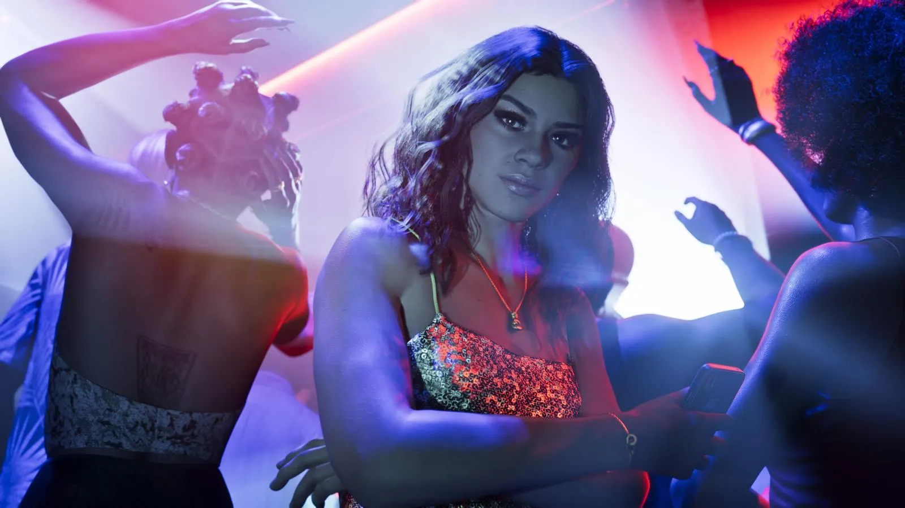

Энди (Andy) в GTA 6: все задания и прохождение
Опубликовано:

- 5 заданий в цепочке — ниже каждое по шагам.
- В трофей Strangers & Freaks цепочка не засчитывается.
С Энди Лусия знакома ещё с главы 1 — именно она передаёт одежду в баре Manatee’s Rest. В главе 3 Энди зовёт Лусию в Cellerica — «сообщество осознанной жизни» со своей иерархией, взносами и фирменными вейп-стиками Manifestick. Чем глубже Лусия заходит, тем меньше это похоже на йогу.
Вся цепочка — только за Лусию. Между заданиями приходится ждать звонка: просто играйте за Лусию и занимайтесь другими делами. На входе придётся заплатить $5 000, на выходе получите $11 800 и трофей.
Все задания
| Задание | Где и когда |
|---|---|
| Climbing the Cellerichain | Глава 3 |
| Pay the Cellerica Fee | Глава 3 |
| Peach! | Глава 3 |
| Read the Label | Глава 3 |
| Puff Puff Pass | Глава 3 |
Climbing the Cellerichain
- Энди звонит и присылает новый адрес — дом в Belville (Leonard County). Заберите с кухонной стойки приветственный набор: кепку и Manifestick.
- Отвезите посылку в Waning Sands: зайдите во двор и положите её на стол. Женщины во дворе обсуждают эротические романы — с ними можно поболтать.
- Пройдите за Энди в гостиную и сфотографируйте её на телефон.
- Возьмите у Энди посылку и отвезите на рыночный прилавок Cellerica на севере Вайс-Сити.
- Третья часть начнётся сразу, как Энди напишет: вернитесь к ней домой, заберите посылку из гаража (рядом — коллекционный журнал, прочитайте) и отвезите в дом в Ambrosia.
- Постучите в дверь и, когда хозяин откроет, поставьте посылку в гараж.
- Выбор у двери в Ambrosia: наркоман попросит отдать посылку. Откажите — он просто уйдёт. Если отдадите, придётся догонять и отбирать.
Pay the Cellerica Fee
- Откройте приложение BuckMe и переведите Энди $5 000 — вступительный взнос. Делается из любой точки карты.
- Задание видно в меню «Карта → Сюжет». Звонок приходит, только когда вы играете за Лусию.
Peach!
- Найдите Энди у скамейки в Belville и идите за ней по территории — она расскажет об иерархии.
- В зале с ковриками для йоги пройдите через белую боковую дверь в раздевалку и возьмите одежду из коробки.
- Посвящение начнётся само.
- Дождитесь звонка Сесилии и поезжайте с Энди на гольф-каре к её особняку.
- Внутрь пустят только Лусию. Сядьте на диван в холле — Сесилия заговорит с вами по видеосвязи с телевизора.
- Выйдите к Энди — Лусия отдаст ей Cloud Manifestick, самый сильный стик Cellerica.
- Выборы (взять вейп, разрядить ситуацию) на сюжет не влияют. Но плохое поведение называют «Peach» — это минус к репутации в сообществе.
- Звонок Сесилии приходит не сразу — займитесь другими делами.
Read the Label
- Сесилия напишет нескоро. Когда напишет — езжайте на север Вайс-Сити.
- Вырубите двух наркоманов у фургона Cellerica и садитесь за руль.
- Отвезите фургон к складу в Belville и поставьте на жёлтое парковочное место.
- Деньги приходят на BuckMe сразу.
Puff Puff Pass
- Дождитесь вызова Сесилии и идите за Феликсом по складу в Belville.
- Наверху — комната, где заперта Энди.
- Появятся сектанты: защищайте Энди и зачистите склад.
- Возьмите машину у склада и езжайте к особняку Сесилии.
- В холле — правая дверь, наверх, дверь в конце коридора.
- Перед стартом наденьте бронежилет: на складе будет перестрелка.
Частые вопросы
Как начать задания Энди в GTA 6?
Пройдите за Лусию Mami Knows Best и Car Services в главе 3 — Энди позвонит сама.
Сколько стоит вступить в Cellerica?
$5 000 через BuckMe. В конце цепочки вы получите $11 800.
Источники: PowerPyx — «Climbing the Cellerichain», «Pay the Cellerica Fee», «Peach! (Join the Cellerica Initiation)», «Read the Label (Retrieve the Cellerica Van)», «Puff Puff Pass (Meet at the Warehouse)», 19.11.2026. Кнопки — для PS5, в скобках — Xbox. Названия — как в английской версии игры.